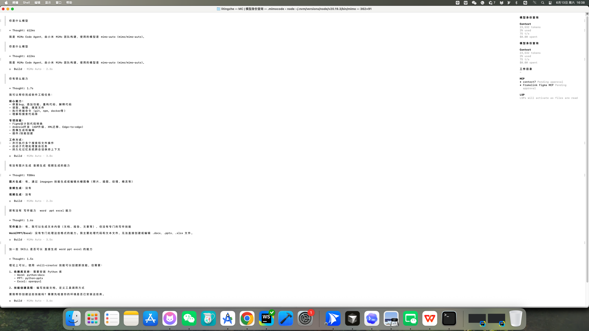

title: "MiMo V2.5 Pro 限时免费：小米的 AI 编程助手，我帮你试了一圈" difficulty: ⭐⭐ date: 2026-06-13 tags: [AI编程, MiMo Code, 小米, AI工具, 免费]
MiMo V2.5 Pro 限时免费：小米的 AI 编程助手，我帮你试了一圈
header.png
写作时间：2026 年 6 月 13 日。工具版本与免费政策可能随时变化，请以官网为准。
难度：⭐⭐
只需安装终端工具，无需注册账号，开启就能用。
最近 AI 编程工具扎堆出新品，小米也悄悄上线了自己的终端编程助手——MiMo Code。搭配刚发布的 MiMo V2.5 Pro 模型，限时免费用。这篇文章帮你捋清楚：它是什么、怎么装、怎么用、和 Claude Code 比差多少。
先说结论：值得试一下
MiMo V2.5 Pro 是小米最新发布的旗舰大模型，专门为 AI 编程和 Agent 场景优化：
- 参数规模超过 1 万亿，实际激活 42B，效率很高
- 支持 100 万 Token 上下文，读大项目不怕溢出
- 编程能力超过 Claude Sonnet 4.6（官方数据）
- 全球智能排名第八，中文模型排名第二（Artificial Analysis 权威榜单）
最关键的是——现在限时免费，安装好直接用，无需注册、无需 API Key。
⚠️ 注意：小米 V2 系列模型将于 2026 年 6 月 30 日正式下线，届时全面切换至 V2.5 系列。现在是体验的好时机，尽早装上试试。
MiMo Code 是什么？
用大白话说，MiMo Code 就是小米版的 Claude Code。
它运行在你的终端里（不是浏览器，也不是 App），是一个能读懂你整个代码库、自动规划修改、实际执行代码操作的 AI 编程代理。
你可以把它理解成一个坐在终端里的 AI 程序员：你告诉它要做什么，它帮你分析、规划、写代码、跑测试，整个过程你都能看到。
你（提需求）
↓
MiMo Code（理解代码 → 规划方案 → 执行）
↓
你的项目文件（被修改、测试、运行）
和 Claude Code、Cursor、Windsurf 是同一个赛道的产品，但 MiMo Code 本身完全免费开源，而且支持接入 75+ 个 LLM 提供商——不限于小米自己的模型。
安装：一条命令搞定 ⭐⭐
Mac / Linux
打开终端（推荐 iTerm、VS Code Terminal 或 Ghostty），粘贴这条命令：
curl -fsSL https://mimo.xiaomi.com/install | bash等几十秒，装完就能用。
Windows
需要 Node.js 环境（没有的话先装 Node.js），然后在 PowerShell 里运行：
npm install -g @mimo-ai/cli小贴士：Mac 用户强烈推荐在 iTerm 或 VS Code 内置终端里用，系统自带的 Terminal.app 体验稍差一些。
启动：安装好直接用
现在限时免费期间，安装好后直接运行 mimo 即可使用，无需注册账号、无需配置 API Key。
在项目目录里运行：
mimo等它加载完毕，直接输入需求就能用了，就这么简单。
scene1-tui-running.png

截图里展示的就是真实使用场景——直接问它「你有什么能力」，它会告诉你支持的功能列表：修 Bug、加功能、重构代码、Android 开发、Figma 设计转代码等。右侧面板实时显示上下文用量和工具状态。
如果未来免费期结束需要配置自己的 API Key，参考：platform.xiaomimimo.com
想切换到其他模型？（比如 DeepSeek、Claude）用 /connect 添加对应提供商的 API Key 即可。MiMo Code 支持 75+ 家提供商。
查看当前可用模型：
/models三种工作模式，搞懂就不迷路
MiMo Code 有三个内置模式，用 Tab 键 随时切换：
什么时候用哪个？
- 小任务、明确需求 → 直接用 Build，告诉它"加个登录功能"，它直接动手
- 大型重构、心里没底 → 先切 Plan 让它出方案，看完觉得 OK 再切 Build 执行
多步骤复杂流程（写测试 → 调试 → 代码审查 → 合并）→ 用 Compose，它会自动调用 13 个内置技能来编排整个流程
亲身测试：一句话做出 H5 小游戏
光看跡分不够直观，我直接用 MiMo Code 测了一下它的实际编码能力。
我输入的内容就七个字：
做个 H5 小游戏测试一下编码能力
MiMo Code 给出的：
它直接进入 Build 模式，32.7 秒内生成了一个完整的打地鼠游戏：
- 3×3 九宫格地鼠洞，30 秒倒计时
- 连击加分机制：3 连击 ×3分、5 连击 ×5分
- 动态难度：分数越高地鼠消失越快，全程自动调整
- 粒子效果、连击展示和结局评语
- 纯单文件实现，一个
whack-a-mole.html，浏览器直接开
没有让它指定做什么游戏类型、没有给任何设计稿、也没有说要做连击机制——这些它全部自己加的。
scene2-game-demo.gif
日常使用速查
启动之后，直接在输入框里打字就行，像和 AI 聊天一样。下面是几个最常用的场景：
读代码、理解项目
帮我分析一下这个项目的整体结构@src/auth/index.ts 这个文件的认证逻辑是怎么工作的？用
@符号 + 文件名，可以把某个文件直接喂给 AI，不用手动复制粘贴。
写代码、改功能
给用户注册页面加一个邮箱验证功能把这个函数从 callback 风格改成 async/await跑命令
!npm test前面加
!就是直接执行 Shell 命令，运行结果会自动传给 AI，方便它分析报错。
让 AI 先规划再动手
按 Tab 切到 Plan 模式，输入：
我想把数据库从 MySQL 迁移到 PostgreSQL，帮我分析一下需要改哪些地方它只分析不动手，给你一份清晰的迁移方案，你确认之后再切回 Build 执行。
权限管理：防止 AI 乱来
AI 帮你写代码，最怕的是它乱删文件、乱跑危险命令。MiMo Code 有细粒度权限控制。
在项目根目录创建 mimocode.json：
{
"permission": {
"bash": {
"*": "ask",
"git *": "allow",
"npm *": "allow",
"rm *": "deny"
}
}
}这段配置的意思是：
git和npm命令 → 直接放行rm删除命令 → 直接禁止（防止 AI 误删）- 其他所有命令 → 每次执行前问你一遍
建议新手一开始把
rm设成deny，等用熟了再按需调整。
和其他 AI 编程工具比一比
MiMo Code 最大的优势：工具本身完全免费开源，不强制绑定某个模型。哪天你觉得某个模型不好用，直接换，不用换工具。
MiMo V2.5 Pro 模型能力到底怎么样？
先看官方跑分（仅供参考）：
编程基准测试（SWE-Bench Verified）
Agent 能力（ClawEval，接近 Opus 水平）
实际体验下来，写日常业务代码、做小工具、改 Bug 完全够用，响应速度也不错。复杂架构设计方面还是 Claude Opus 更强，但对于大多数开发场景，MiMo V2.5 Pro 的性价比已经非常突出了。
API 定价对比（正式收费后）
比 Claude Sonnet 便宜 3~5 倍，缓存写入暂时还免费。
几个实用小技巧
@引用文件：写@文件名直接把文件内容喂给 AI，不用复制粘贴- 拖截图进去：把截图拖进终端窗口，让 MiMo Code 看图（需要所接入的模型支持多模态， MiMo V2.5 Pro 本身暂不支持，可切换其他多模态模型）
!执行命令：!git status直接跑命令，输出结果自动传给 AI 分析- Tab 切模式：写代码用 Build，规划方案用 Plan，复杂流程用 Compose
/help看所有命令：不记得某个功能怎么用的时候，输入/help查速查表
相关链接
最后说一句
小米这次的 MiMo Code + V2.5 Pro 组合，算是国产 AI 编程工具里比较认真做的一款：工具开源、模型免费、不锁定供应商。
如果你平时在终端里干活比较多，又一直想用 AI 编程助手但舍不得 Claude Code 的月费，现在是个不错的入坑时机。
趁着限时免费，装好 MiMo Code，进一个项目目录打开终端敲 mimo，就能开工了。